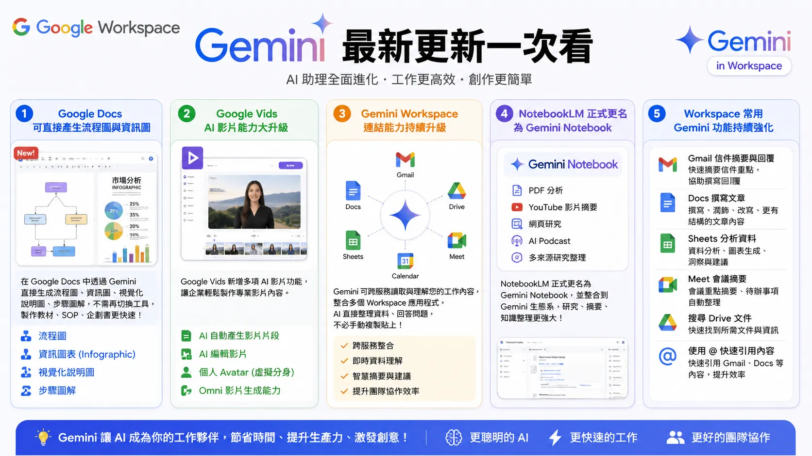

Jack Shen｜Google Workspace Gemini 更新總覽：Docs 視覺生成、Vids Avatar、Connector 與 Gemini Notebook

一句話摘要
這則 Threads 把 Google Workspace 最近幾週的 Gemini 更新整理成一張「辦公室 AI 功能地圖」：文件產圖、影片生成、跨 Workspace 讀取、研究筆記本與常用辦公 app 補強，正在逐步變成同一套工作流。
貼文整理的 5 大更新
- Google Docs 可直接產生流程圖與資訊圖：流程圖、infographic、視覺化說明圖、步驟圖解。
- Google Vids 新增 AI 影片能力：AI 影片片段、AI 編輯影片、個人 Avatar、Gemini Omni 影片生成。
- Gemini Workspace 連結能力升級：跨 Gmail、Docs、Sheets、Drive、Meet、Calendar 讀取與整理工作內容。
- NotebookLM 更名為 Gemini Notebook：PDF 分析、YouTube 摘要、網頁研究、AI Podcast、多來源研究整理。
- Workspace 常用 Gemini 功能強化：Gmail 摘要/回覆、Docs 撰寫、Sheets 分析、Meet 摘要、Drive 搜尋與 @ 快速引用。
官方查核
### Docs：文件內產生與編輯視覺素材
Google Workspace Updates〈Generate and edit visuals with Gemini in Google Docs〉確認：使用者可在 Google Docs 中用 Gemini create and edit images, diagrams, and infographics directly alongside your text，並可利用文件上下文產生相關視覺素材。
這支持貼文中「Docs 可直接產生流程圖與資訊圖」的主張，但實際可用資格仍依 Workspace / Google AI 方案與 rollout。
### Vids：Gemini Omni Flash 與 personal avatars
Google Workspace Blog〈Gemini Omni Flash now available in Google Vids〉與 Workspace Updates personal avatar 公告確認：Google Vids 可用 Gemini Omni Flash 進行影片生成/編輯，也可生成 look and sound like you 的 personal avatar 影片片段。官方同時列出 18+、English、地區與 Workspace admin 控制等限制，並指出 Gemini Omni 生成影片會加入 SynthID。
### Gemini Notebook
Google Blog〈NotebookLM is now Gemini Notebook〉確認 NotebookLM 已更名為 Gemini Notebook，定位為同一個 standalone product，但會更深入整合 Google 生態與 secure cloud computer。
KB 已有一篇 Gemini Notebook 獨立條目；本篇不重複細節，而是把它放回 Workspace 生態總覽。
### Workspace AI / Connector
Google Workspace AI 產品頁確認 Gemini 被整合進 Gmail、Docs、Sheets、Meet、Chat、Vids 等日常 app，也提供 Gemini app 與 Gemini Notebook。Google Workspace Help 也提到 Gemini app 可依設定使用 Calendar、Docs、Classroom、Drive、Gmail、Keep、Tasks 等 Workspace 內容。
圖片 OCR 重點
封面圖標題為「Gemini 最新更新一次看」，副標是「AI 助理全面進化・工作更高效・創作更簡單」，並分成五欄：
- Google Docs：可直接產生流程圖與資訊圖。
- Google Vids：AI 影片能力大升級。
- Gemini Workspace：連結能力持續升級。
- NotebookLM 正式更名為 Gemini Notebook。
- Workspace 常用 Gemini 功能持續強化。
為什麼值得收藏
這篇適合作為 Workspace AI 課程的總入口：
- 不再是單點工具，而是 Gmail / Docs / Sheets / Meet / Drive / Vids / Notebook 逐步串起來。
- 對企業導入來說，重點會從「會不會 prompt」變成「資料權限、內容治理、人工審核與部門流程」。
- 對教材與 SOP 製作，Docs 直接產圖 + Vids 影片 + Gemini Notebook 研究整理，已經能組成一條內訓內容流水線。
風險與限制
- Workspace AI 功能通常受方案、語言、地區、管理員設定與 rollout 影響，不是所有帳號立即可用。
- Gemini 可讀取 Workspace 內容時，企業必須釐清資料權限、保密文件、共享範圍與稽核紀錄。
- Docs / Vids 產出的圖像與影片仍需人工檢查事實、品牌一致性與授權。
- Meet 摘要、Gmail 回覆與 Sheets 分析適合輔助決策，不應直接取代人類責任歸屬。
來源
- Threads 原文：https://www.threads.com/@jackshenaiadvisor/post/DbcTGEvkRM6
- Google Workspace Updates｜Generate and edit visuals with Gemini in Google Docs：https://workspaceupdates.googleblog.com/2026/07/generate-and-edit-visuals-with-gemini-in-Google-Docs.html
- Google Workspace Blog｜July 2026 Workspace feature drop：https://workspace.google.com/blog/product-announcements/july-2026-workspace-feature-drop
- Workspace Updates｜Personal avatar with Gemini Omni in Vids：https://workspaceupdates.googleblog.com/2026/07/cast-yourself-in-ai-video-clips-using-your-personal-avatar-with-Gemini-Omni-in-Vids.html
- Google Blog｜NotebookLM is now Gemini Notebook：https://blog.google/innovation-and-ai/products/gemini-notebook/notebooklm-gemini-notebook/
- Google Workspace AI：https://workspace.google.com/solutions/ai/